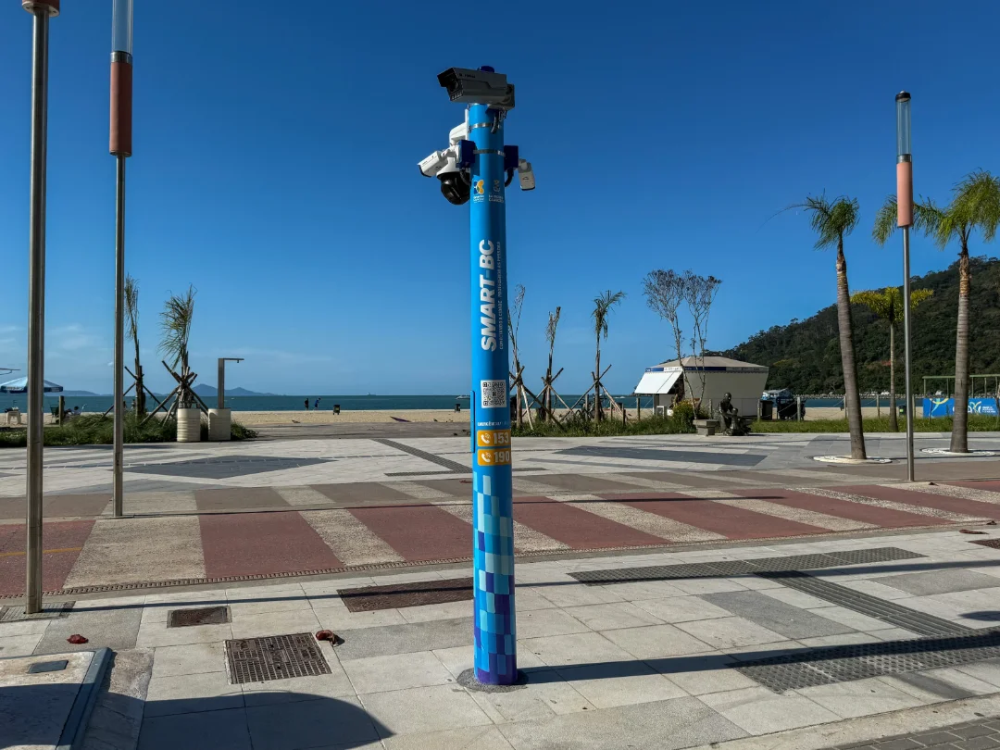

tecnologia
Balneário Camboriú expande sistema de monitoramento com totens inteligentes e novas câmeras
11/11/2026 às 03:36 (horário de Cuiabá)

Balneário Camboriú opera atualmente com 682 câmeras de segurança, das quais 164 contam com tecnologia para leitura de placas e 54 com reconhecimento facial. Como reforço, o município deu início em outubro à instalação de totens do programa Smart BC, começando pela nova orla da Praia Central. A fase inicial prevê oito estruturas conectadas à Central da Guarda Municipal, com recursos que incluem identificação de procurados e contagem de pessoas.
A expansão também abrange a rede municipal de ensino, que começou a receber melhorias em setembro por meio de unidades no Bairro dos Municípios. O projeto prevê 150 câmeras e um investimento anual de aproximadamente R$ 1,4 milhão, com ferramentas de controle de acesso e análise de vídeo que serão integradas gradualmente a todas as escolas municipais.